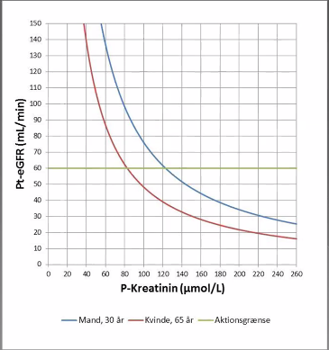
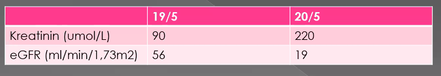
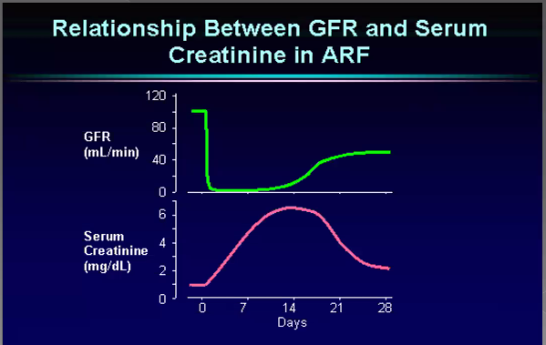
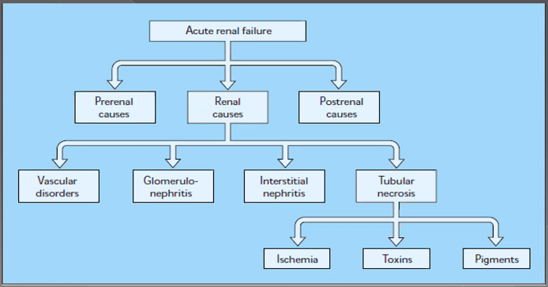
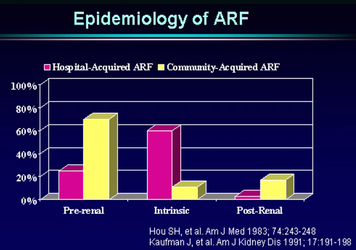
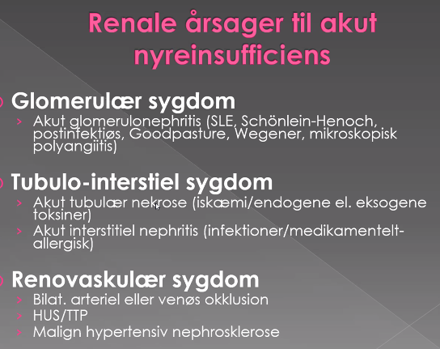
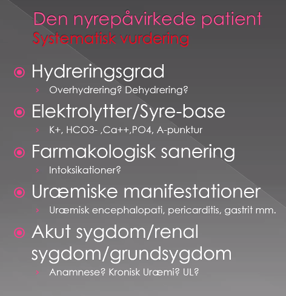
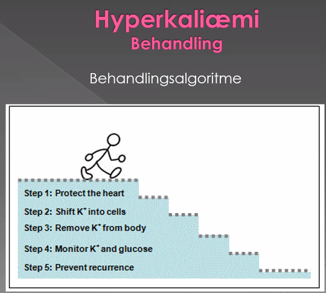
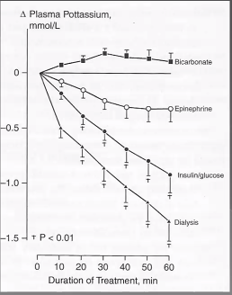

Akut nyre
CAse
123 overlevende Rizwan er nefrolog fra Herlev 45 min akut nefrologi
Case
- 62 årig mand indl. akut pga. svimmelhed, træthed efter 1 uges varende gastroenteritis.
- Tidl.: TUR-P for 5 år siden, AMI for 6 år siden.
- Medicin:
- Selozok 50 mg x 1
- corodil 10 mg x 1
- furosemid 40 mg x 1
- brufen 400 mg p.n. pga. slidgigt i begge hofter.
- Obj
- BT 90/60. RF 24. SAT 98 % Klinisk dehydreret.
- Biokemi:
- P-kreatinin 350 umol/!
- P-carbamid 30 mmol/!
- P-K 6 mmol/L
- P-standard bikarbonat 18 mmol/l
- Hvilken slags nyresvigt tror vi patienten har?
- Prerenalt
- Hypovolæmisk
- Lavt blodtryk
- Renalt
- Pga kombination af corodil, furosomid, brufen *
- Prerenalt
Tre slides om kreatinin og eGFR / GFR.

- Små ændringer i kreatinin i normalområde => store ændringer i GFR
- Ikke liniear sammenhæng, men in..
- Store stining i høje krea, ikke så stor GFR
- Brug ikke eGFR hos patienter med AKI
 Har slet ingen GFR! Kreatinin stiger så hurtigt.
 * Ved at opnå steady-state!.. * Bemærk dette er reel GFR og ikke eGFR. * 15-06-2020 15:06
- Ved akut nyreinsufficiens vurderes nyrernes funktion ud fra
- Døgnurinvolumen
- Ændringer i døgnurinvolumen
- P-kreatinin og karbamid niveau
- Ændringer i kreatinin og karbamid
- Kreatinin/karbamidclearance (Urin)
- Der er sjældent behov for eksakt mål for nyrernes funktion
Årsager til AKI


- Dem der får det under hospitalsophold
- 2/3-dele får et renalt på hospital
- forskelligt medicin giver renalt
Prærenalt nyreinsuff
- Kriterer
- Akut stigning i kreatinin/karbamid
- Renal hypoperfusion
- Blank urinstix
- Normalisering/bedring af nyrefunktion efter korrektion af udløsende årsag (24-48 timer)
Årsager
- Hypovolæmi
- Blødning
- Væsketab
- hud: perspiratio
- gastro: opkast, diarre.
- polyuri
- Systemisk vasodilation
- Antihypertensiv medicin
- Sepsis
- Anatylaksi
- Cirhose
- Nedsat cardiac output
- Hjertesvit
- kardiogen shock
- Påvirket intrarenal hæmodynamik
- ACE-inhibitor
- NSAID
- Ciklosporin
- Hepatorenalt syndrom
Spørgsmål
- Hvorfor er "Påvirket intrarenal hæmodynamik" prerenalt?
- Reversibelt og prerenalt.
- Jaah. Der er ikke varigskade.
- Man kan godt se renalt
- Gentamycin, andet AB. Direkte toksisk for nyrerne.
- NSAID kan give kronisk over længere tid
- Men kortere tid / akut kan det hive hypoperfusion.
Renale årsager
Fokuser på ATIN og Shocknyre - dem i skal kende

- Hvem får ATIN/Shock-nyre under hospitalsophold?
- Hvilke slags?
- Ældre p
- Septisk shock
- Svær sepsis.
- Kirurgiske, blødningspatienter, store operation, hæmodynamisk påvirkede gennem længere tid.
Case 2
75 årig mand; kendt T2D. Tidl. normal krea
- Indlægges med
- Kvalme, opkastninger gennem 3 dage
- Relativ hypotension (ortostatisk svimmelhed)
- Medicin: enalapril, thiazid
- Diagnose: Sepsis
- Kreatinin 150 ved indlæggelse
- Formodet diagnose >
- Prerenalt, mest ssh når han kommer udefra
- Hypovolæmi, sepsis.
- Diuretika: 2 af Tripple-whammy
- Væskebehandling > fortsat hypotensiv
- BT 80/50, p 100, RF 32, SAT 94 på 7 liter 02
- Kreatinin 250
- Diurese 500-600 mL (furix)
- Klinisk overhydreret
- Formodet diagnose >
- Hjertesyg, skjult AMI pga diabetes? Stumt infarkt.
- SYgehistorien er ikke helt infarkt.
- Den er mere nyrepåvirkning.
- For protraheret anamnese.
- Ganske relevant dog.
- Kardiogent shock?
- 15-06-2020 15:40 *
- EKG er helt relevant!
- Han er liiiiidt dårligere end før..
- Ustabil pt.
- B: Lidt boblende vejrtrækning
- Væske på lunge 15-06-2020 15:28
- Krepitation?
- Lungeødem / lungestase.
- Tag nu det fucking EKG!
- Rizwan er okay med SAT'en
- Mere furix? Han er rimelig lavttrykket..
- Nyrerne er ikke perfunderet?
- Når MAP er lav, kan man ikke forvente så stor effekt
- Der kan være vasodilationseffekt.
- Nu formodet diagnose: ATIN.
- Man får først facitlisten på hvilken slags nyreinsuf det er efter et par døgn. Hvis det ikke retter sig, må man formode det er ATIN.
- Hjertesyg, skjult AMI pga diabetes? Stumt infarkt.
Postrenalt
- Afløbshindring fra begge ureteres
- C. prostatae
- C. cervicis uteri
- Retroperitoneal fibrose
- Sten/strikturer bilat.
- Infravesikal obstruktion
- Prostata hypertrofi
- Blærecancer
- Urethra striktur
Altid rektal eksplorer. UL af nyrer og urinveje. Urologerne må hjælpe til.
Den nyrepåvirkede patient - Systematisk vurdering

Konklusion
- Praktisk fremgangsmåde
- Ingen nem flow-chart
- Grundig anamnese, obj. undersøgelse
- Gennemgå medicinliste (nefrotoksisk medicin)
- Standardblodprøver og URINSTIXI! Se tidligere blodprøver
- Nyreinsufficiens hospitalserhvervet eller samfundserhvervet
- Udeluk postrenal nyreinsufficiens
- Undersøg for mulige prærenale årsager og korriger
- Renal årsag > kontakt nefrolog
- Væskeskema og daglig vægt!!
15-06-2020 15:45
Hyperkaliæmi - definitioner
- Ingen klokkeklare definition
- Let: 5,5-6
- moderat: 6-6.5
- svær: >6,5
- Inddeling i kategorier da risiko for komplikationer
- Vurderer også ændringer i kalium og klinik
- Hvis pt ikke tisser, så kommer kalium til at stige og stige.
- Der findes mange instrukser osv, så ingen detaljer
- Formål med at få K+ ned. => Beskytte hjertet

- Calcium => stabiliserer membranpotentiale, virker hurtigt. altid det man starter med.
- Kalium ind i celler: Glukose-insulin
- Resten er ikke så vigtige, så dem springer vi over.
Hvor hurtit kan vi få kalium ind i cellerne?

- Vi kan vinde tid med insulin, så vi kan finde ud af hvorfor,
- evt sætte dialyse igang
- Det vigtigste er at få telemetri på dem og ligge en monitoreringsplan.
Indikationer for akut dialyse
15-06-2020 15:50
- Overhydrering (lungestase), og utilstrækkelig effekt af diuretika
- Livstruende intraktabel hyperkaliæmi (P-K > 6-7 mmol/l)
- Hvis man kan se K+ kommer til at stige og stige..
- Svær metabolisk acidose (P-standard bicarbonat < 12 mmol/l)
- Symptomatisk uræmi (pericarditis, encephalopati)
- Visse forgiftninger: fx salicylat, lithium
Dans hjertestop fifs til hospitaler med dialyse afd.
15-06-2020 15:51
- Hypovolæmi efter dialyse
- Høj kalium før dialyse.
- el lungestase
Spørgsmål til sidst
Spacede lidt ud.. 15-06-2020 15:53. Start 51:17
- Hvad med det der polyuri?
- Oftest ved post-renale.
- Man ved ikke hvorfor. Nogle gange er det kompensatorisk (komme af med væske), andre gange er det nedsat koncentrationsevne, og så skal Pt have væske. Det ved urologerner nok.
- Hvor tidligt begynder man at behandle forhøjet K+?
- Hvis dehydrerede, så væske
- MEN DET VIGTIGSTE: Monitoreringsplan!
- fx måle K om to timer.
- hvis K+ så ikke retter sig eller stiger kan man tidligt sadle om.
- SBJ: Dehydratio, prerenalt, skal man bare give væske altid?...
- I er ikke i tvivl om de har lungestase.
- og ellers så giver I dem bare væske!
- Holdningspapir: I refrakte doser!
- 250 ml fx
- Sarita: Spg Case T2DM. Shocknyre pga sepsis. Kunne det være diabetisk nefropati.
- Det er kronisk, så ikke akut forværret.
- Hvordan vurderer man overhydrering
- Halsvenestase
- Lungeødem vil have markant HVS.
- Slimhinder
- Hudturgur
- BT er ikke så godt nødvendigvis
- Deklive ødemer
- Husk: den indlagte pt et par døgn, så er det os sacrum og hofterne (ikke fødderne).
- Halsvenestase